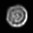
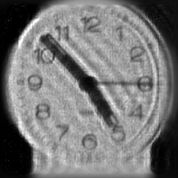
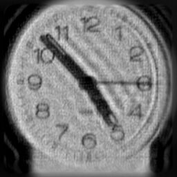
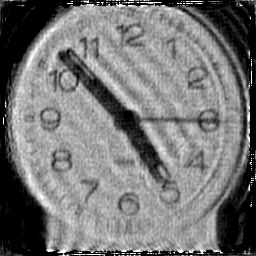
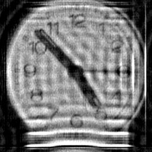
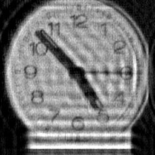
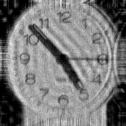
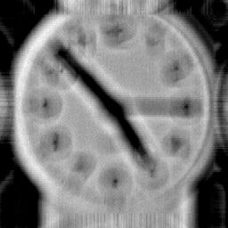

For the latest deconvolution results, click here. For the latest deconvolution results, click here.
Comparison of 2-D Deconvolution Methods for Correction of Out-of-Focus Blur
Out-of-focus blur cannot be restored using 'advanced sharpening' tools like unsharp masking or even simple deconvolution methods like Van Cittert. This is partly due to the relatively large size of the PSF, the fact that the PSF is usually asymmetrical in practice and the fact that energy in the PSF is relatively evenly distributed across this large area. For Van Cittert deconvolution to succeed the PSF must be symmetrical and centre-dominant like a small Gaussian. The PSF for out-of-focus blur is a plain disc (not an Airy disc) in its simplest form but optical abberrations and diffraction effects will shape the disc in practice.
The results of applying several deconvolution methods to an image of a clock blurred by delibrate de-focus of the camera (not blurred in the computer - which is a much simpler problem) are presented below. These tests thus show the abilities of the algorithms to operate on real-world imagery with real noise and uncertainties. To see the results of a more controlled experiment with a synthetic object visit the 'A Test' page.
In my earlier experiments with this clock image I allowed myself the luxury of having a large dark background around the clock to minimise boundary ringing effects. In real life, the boundary problem is not so obligingly attenuated and methods to overcome boundary effects are an important aspect of practical deconvolution algorithms. For this reason I now use a cropped version of the blurred image as input to the algorithms, ensuring that the crop rectangle cuts through part of the clock image to cause high contrast boundary transitions. The deconvolution algorithms have been extensively updated to handle asymmetric PSFs and I also employ advanced boundary ringing reduction technology. Boundary ringing should not be confused with the ringing due to high contrast structures intrinsic to the image - one solition to this problem is also shown below.
01.01.2007
 The original image of the focus blurred clock. The original image of the focus blurred clock.
 The PSF derived from measurements on the camera.
Downloads of origininal image and PSF in FITS format:
The images displayed on this web page are JPEG compressed. If you want to try the deconvolutions yourself download the zip-compressed FITS images of the clock and PSF below. These are stored to double precision floating point accuracy. A sample settings text file for Deconvolve.exe v2.0 is also available. These images are copyright of Dr P. J. Tadrous and may not be published without his written permission.:
Blurred image.
PSF.
Settings file.
|
Iterative Deconvolution by the Lucy-Richardson and Landweber Methods. The Landweber method gives a least squares solution and
Lucy-Richardson gives the maximum likelihood expectation maximisation solution. Landweber can cope with negative values but not Lucy-Richardson. Both
are amenable to my SOLVE method for boundary ringing reduction which is used in these results obtained with an alpha = 0.999 (Landweber only) and
Fourier convolutions for 512 iterations. a) Lucy-Richardson, b) Landweber solution, c) Internal ringing due to the clock handles and sharp right border are
greatly attenuated by weighting the deconvolution against these structures. This allows a greater degree of deconvolution limited only by noise amplification.
This result used 1024 Landweber iterations. |
 |
 |

|
a. |
b. |
c. |
Maximum Entropy Method: Myrheim & Rue and Gull & Daniell. Based on the algorithms of Jan Myrheim and Haavard Rue (New
Algorithms for Maximum Entropy Image Restoration, CVGIP: Graphical Models and Image Processing; 54(3):223-238, May 1992), this powerful method was
devised by SF Gull and GJ Daniell (Nature 272:686ff 1978). a) input, b) solution using MaxEnt 2 of Myrheim & Rue with a constant noise variance estimate
32 iterations using Myrheim & Rue's method for preventing boundary ringing, c) result of Gull & Daniell method after 512 iterations using my SOLVE method
for preventing boundary ringing. To see the effect if you don't use SOLVE, see the results for Weiner filtration below. |
|
 |
|
a. |
b. |
c. |
Weiner Filtration. This is a simplified Weiner filter (with Gamma=0.001) based on the formula in R.C. Gonzalez & R.E. Woods, Digital Image
Processing, 1992 and Eq.20 of Savakis, AE and Trussell, HJ, IEEE Trans. Image Proc.2(2):252-259 (1993). a) no boundary treatment, b) reflective boundary
treatment of Aghdasi F & Ward RK IEEE Trans Image Proc 5(4):611-618. This reduces but does not eliminate the boundary ringing. c) this result used my
variant boundary treatment which virtually eliminates boundary ringing at the expense of creating artefactual details at the boundaries of the solution (i.e. the
boundary pixels have not been solved - merely pacified). Because this is not an iterative technique, one cannot use my SOLVE method with it, so this is the
next best thing. If the SOLVE method is not employed in iterative deconvolution then ringing of the type shown in a) will result. |
 |
 |
 |
a. |
b. |
c. |
Van Cittert & Unsharp Masking. a) In this example, 64 iterations of the Van Cittert gives poor results here (more iterations were even worse). The
algorithm is based on the formula given in Ch5 of the Book 'A Practical Guide to CCD Astronomy' by Patrick Martinez and Alain Klotz, 1998 Cambridge
University Press, ISBN: 0521590639, b) The unsharp mask is also hopeless at correcting focus blur and is included for comparison as it is a much
acclaimed 'advanced sharpening' tool in commercial photo editing packages. My variant boundary treatment has been used in both cases. |
|
 |
a. |
b. |
|


 Dr P. J. Tadrous 2000-2026
Dr P. J. Tadrous 2000-2026